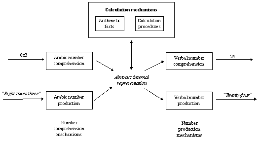

So what is the "something" that we do well when we solve arithmetic problems? The view taken here is that the things we do well are those tasks suited to a certain kind of computation---namely connectionism. Difficult tasks, such as arithmetic, need to be turned into pattern matching problems. That is, "we succeed in solving logical problems not so much through the use of logic, but by making the problems we wish to solve conform to problems we are good at solving" (Rumelhart, Smolensky, McClelland & Hinton 1986, p. 44). Exactly how this is done for arithmetic is the topic of this thesis. Two elementary arithmetic skills are considered: adult memory for multiplication facts and children's errors in long (multicolumn) multiplication.
The first part of the thesis considers recall of multiplication facts, such as 3x6=18. Intuitively it seems that recalling the answer to such a problem is neither difficult nor drawn-out. However, the model presented here suggests a brief struggle between products in memory before the (often correct) answer "pops up." As problems get more difficult (which usually means larger) the struggle takes a little longer---around one second in some cases. Certain problems are easier than others, notably the tie problems 2x2, 3x3, and so on), and the 5s problems (5 times anything). When mistakes are made they tend to be related to the presented problem. For example, a common mistake is 6x7=48, and 48 is the answer to 6x8. That is, errors are often the correct answer for a problem which shares an operand with the presented problem.
This phenomenon and previous models are looked at in detail in chapter 2. The review draws on normal and brain-damaged studies of the reaction times and errors of adults recalling multiplication facts.
Chapter 3 describes the connectionist model built to capture the reaction times and errors of adults. The basic idea is a simple one: memory for multiplication facts consists of a set of associations between operands and products; recall is the process of spreading activation, resulting in a product's activation exceeding a threshold. The activation spreads at different rates for different problems, giving different reaction times. Occasionally, when under some kind of time pressure, a false product exceeds the threshold. Most of these errors are operand errors, and the reasons for this are explored.
By varying the assumptions of the simulations, certain factors were found to be important in determining the phenomena. There is some evidence that smaller problems are experienced more often than larger problems, and this skew in frequency has a strong effect on the model. Also, the input encoding to the network (representing the operands of a problem) can effect the distribution of errors and reaction times. In particular, the degree of "coarseness" or "sharpness" of the encoding is explored.
Other phenomena are also investigated. For example, it seems that zero problems (zero times anything) are solved by the rule 0xN=0. There is plenty of evidence for this, including: zero problems are solved very quickly; errors are of the form 0xN=N; brain-damaged patients can re-learn zero problems from exposure to just 2 examples, but not non-zero problems. There is certainly something special about zero, and it is not clear how this fits into the associative framework.
Part II: Multicolumn multiplication
The second half of the thesis examines children's errors on multicolumn multiplication problems. Behaviour on these problems seems to be rule governed. Children pick up a collection of "bugs"---systematic perturbations to the correct rules of arithmetic--- and apply the rules producing all sorts of errors. For example:
5 2 4 7 6
x 7 3 1 x 4
-------- -----
3 5 6 4 1 4 4
2
In the first example, the child multiplies using the pattern for addition: 1x4=4, 3x2=6, 7x5=35. The second example shows a child getting the first multiplication, 4x6=24, correct. Then, when there is no second multiplier, the child uses the carry in the next multiplication: 2x7=14.
These errors have previously been modelled with production systems. Chapters 4 reviews the literature on buggy behaviour and models of buggy behaviour, and outlines relevant work from connectionism. Particular attention is paid to VanLehn's (1990) "Sierra" model, as this seems to be the best available model of procedural misconceptions (see also Pirolli 1991). Briefly, the prevailing notion is that children reach "impasses" when solving problems---situations in which no rules directly apply. These impasses need to be "repaired" by general purpose heuristics. Sierra has these heuristics and a learning mechanism. Incomplete arithmetic rules are learned, which means that Sierra reaches impasses. Different errors are observed depending on what kind of repair is carried out.
Sierra is a successful model, and the mistakes children make they do seem to derive from following faulty rules. How could a connectionist build a model of this behaviour? As Boden (1988, p. 167) notes:
It is not clear that processes of relaxation using multiple constraints, powerful though they may be for pattern matching, are well suited to modelling conscious planning or cryptarithmetic---or even mere arithmetic, for that matter.
Chapter 5 explains the approach taken in giving a connectionist interpretation of multicolumn arithmetic.
A set of operations was devised to allow a network to move around, read from and write on a problem. A "curriculum" of problems was selected, starting with easy addition tasks and moving up to three column multiplication. Each problem was encoded as a sequence of operations and a recurrent network was trained to activate the correct operation at the correct moment when solving a problem. Buggy behaviour was exhibited when the network was tested on unseen problems. Analysis shows that the representations learned by the model have a procedural structure, allowing bugs to be composed of correct skills plus chunks of skills which are correct in other situations. It is suggested that the gradual learning of these representations is an interesting alternative to snap-shot rule acquisition accounts.
Connectionist models do not reach impasses as such. That is, there is never a moment when the system "gets stuck" and needs to repair the current state. Hence it is necessary to address the role of impasses in learning this task. Are impasses important learning events, or just a by-product of the problem solving mechanism?
It was never going to be possible to build a model which could compete with the empirical power of VanLehn's system: Sierra is the product of over ten years research. Rather, the work described in this half of the thesis is best thought of as a "demonstrator" of how one might model arithmetic from a connectionist perspective.
Structure of arithmetic skills
The splitting of arithmetic skills into two models---fact recall and procedural skills---is supported by studies of brain-damaged subjects (McCloskey & Caramazza 1985; McCloskey, Aliminosa & Sokol 1991). Figure 1.1 shows the structure of the number-processing system. This structure was devised by noting that particular components of the system can be selectively damaged. For example, one subject (RR) was asked to read Arabic numbers aloud. For 37 000 he said "Fifty-five thousand", for 2 he said "one" (McCloskey & caramazza 1985, pp. 187-188). Yet RR could determine which of two presented numbers was larger, and had no trouble selecting a pile of tokens that corresponded to a presented Arabic number. It seems that RR had no difficulty in comprehending and representing number, but was impaired in production alone.
This, and other experiments, led McCloskey & Caramazza (1985) to propose the structure shown in figure 1.1. The model of arithmetic memory deals with the "arithmetic facts" and "abstract representation" parts of the figure. The multicolumn model is concerned with the "calculation procedures" part of the structure.
|  |
There are two major aims. First, to build an explicitly specified model of memory for multiplication facts. Previous models have been poorly specified---either not implemented at all, or making assumptions such as the probability of an error being proportional to answer node activation. These details need to be fleshed out in order to understand the importance of various assumptions, or changes to assumptions. Hence, the first contribution is an explicit model that can be tested and criticised. Variations on the model aim to understand the causes of the phenomenon. The causes include the frequency of problems, the creation of false associations and the nature of the facts themselves.
The second aim is to demonstrate an alternative to production system models of multicolumn arithmetic, and to show that such an approach is useful. This constitutes the first connectionist model of this phenomena. Errors are characterized as perturbations to processing trajectories, rather than faulty rules or repairs to impasses. This view conceptualizes learning as the formation and differentiation of states in something similar to a finite state machine. In addition, the analysis of the system is a useful analysis of a sequential network learning a large structured problem.